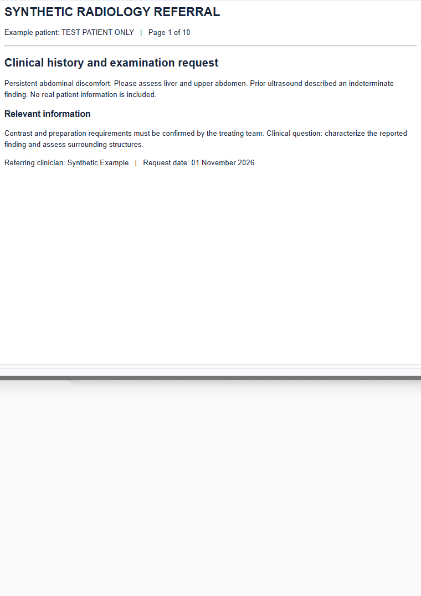

R
RISpro
Operational workspace
DESIGN MOCKUP · SYNTHETIC
TEST PATIENT ONLY · مريض تجريبي
MRN 000042 · 46 / F
Accession
V2-000042
CT
CT liver multiphasic with contrast
Scheduled
Patient details
More ···
✕
Documents
3
Imaging request.pdf
10 pages · selected
Clinical history.pdf
4 pages
Referral.pdf
1 page
Upload / scan
Request document
Expand
Continuous pages
Fit page
Fit width
− 100% +
Open in new tab

Assigned protocol
Expand